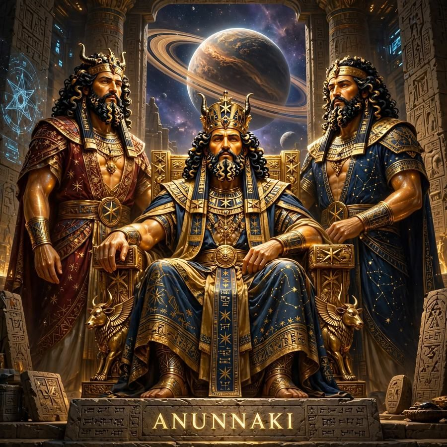
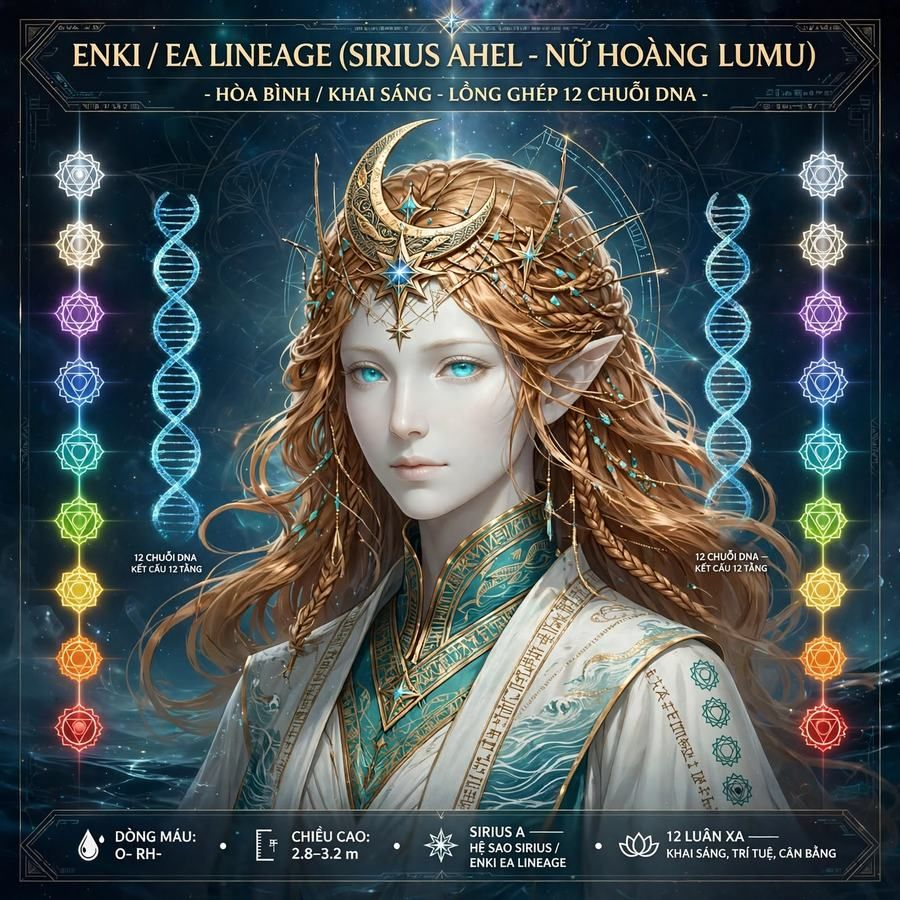
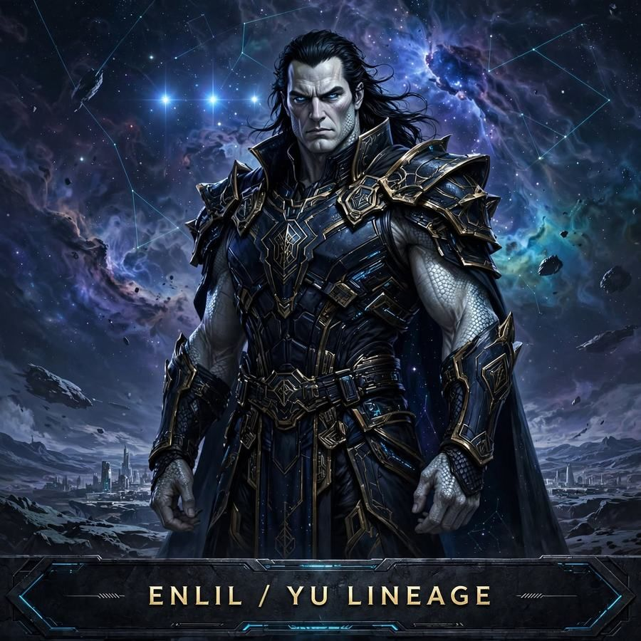
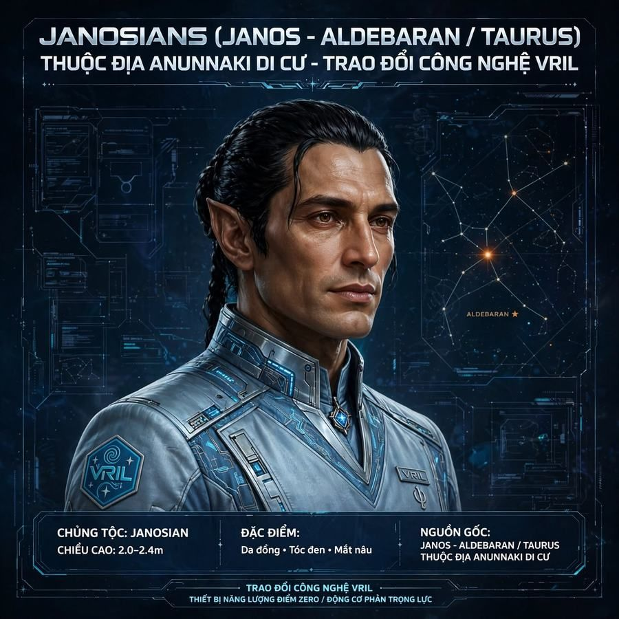
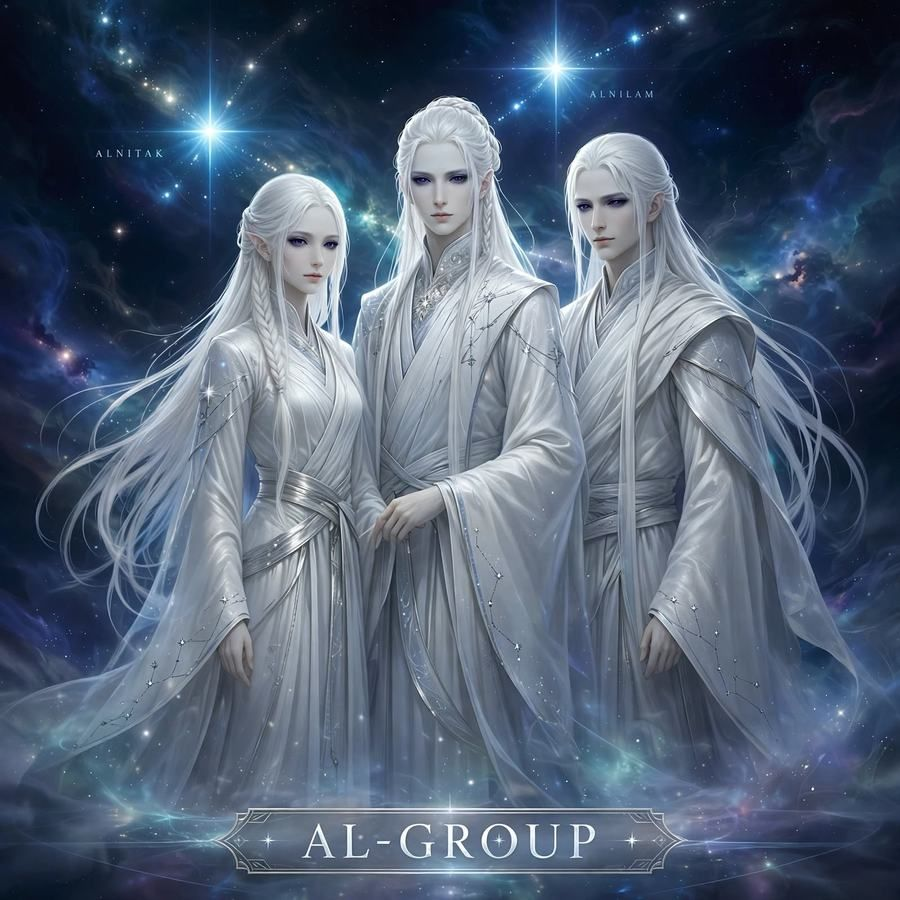
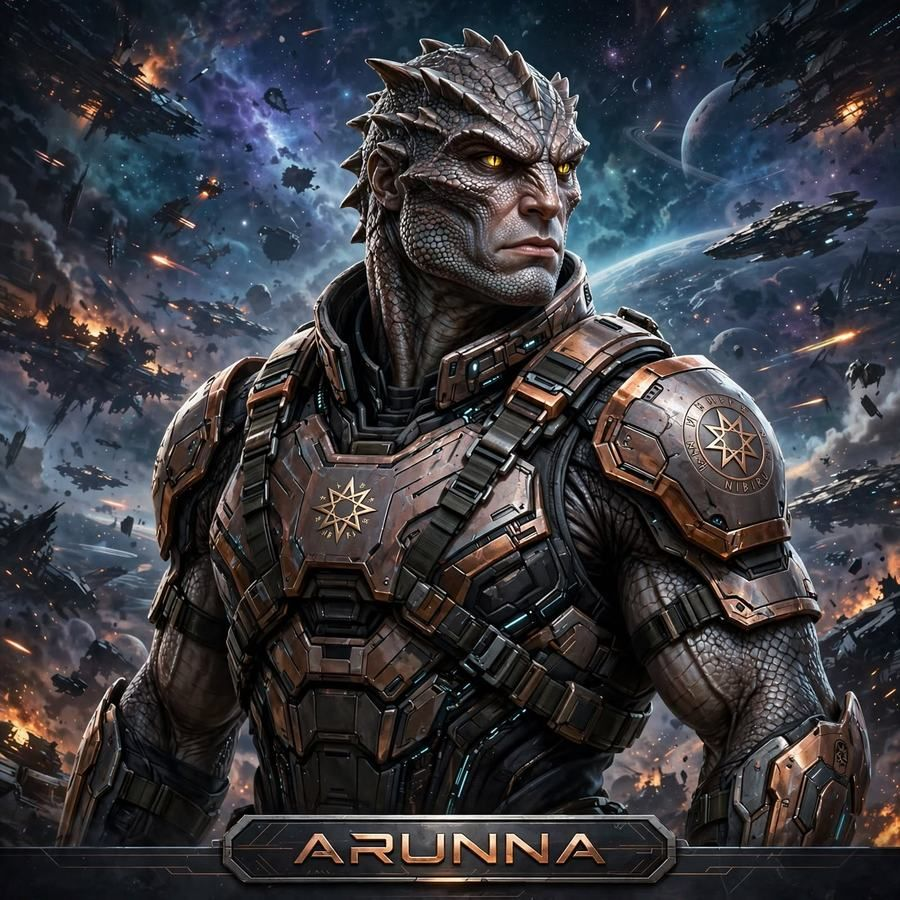
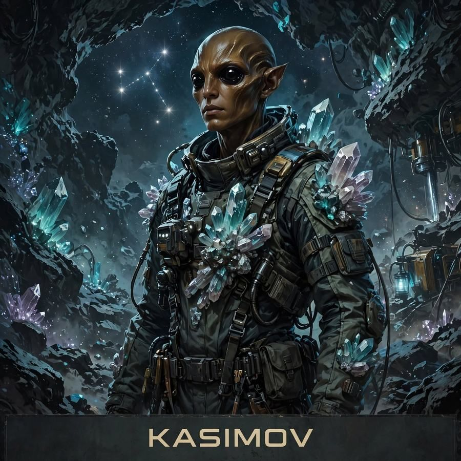
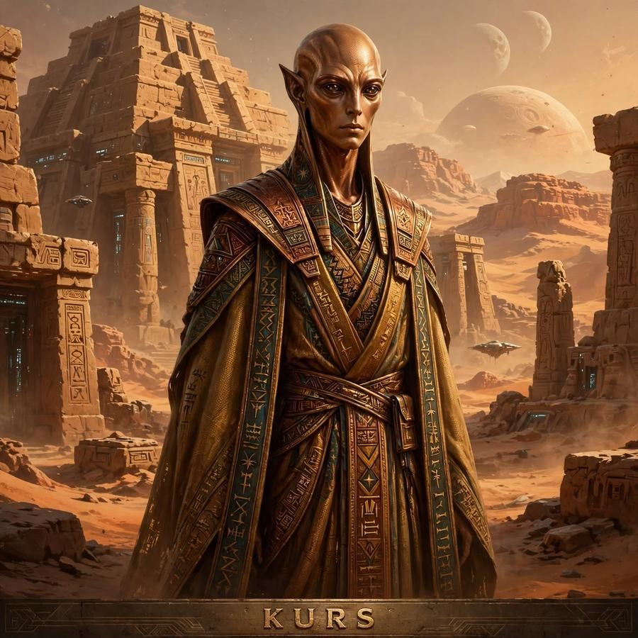
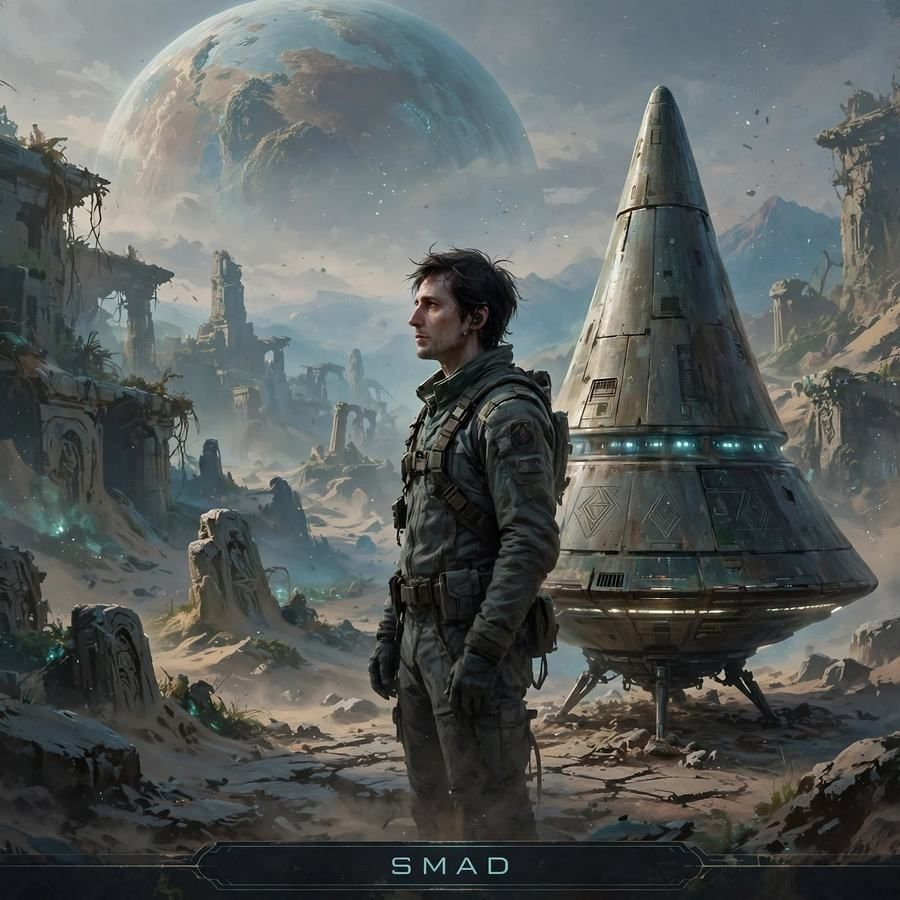
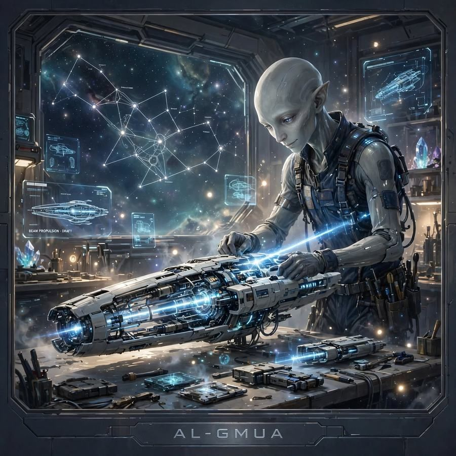

Trang chủ / Chuyên đề 7: Hồ Sơ Các Chủng Tộc / Kỳ 69
Chuyên đề 7 · Kỳ 69 / 100
HOÀNG GIA ANUNNAKI & DI SẢN DÒNG MÁU NIBIRU / ALDEBARAN / ORION

Kỳ này trình bày hồ sơ sinh học của 10 chủng tộc thuộc khu vực Hoàng Gia Anunnaki & Di Sản Dòng Máu Nibiru / Aldebaran / Orion. Mỗi hồ sơ gồm hình dáng, chiều cao, đặc điểm sinh học – giác quan, và vai trò trong bức tranh thiên hà.
Anunnaki / Anunene (Nibiru / Sirius B & Orion)
- Hình dáng & Chiều cao: Khổng lồ cao 2,7m – 3,6m, nặng 300–450kg. Da trắng phát sáng/bánh mật; tóc râu xoăn đen/vàng; mặt vuông, mũi thẳng.
- Đặc điểm Sinh học & Giác quan: Máu chứa khoáng chất đồng cao ("Dòng máu xanh"), nhóm máu O- Rh-. Đẻ con. Tuổi thọ hàng trăm ngàn năm.
- Đặc tính & Vai trò Thiên hà: Thống trị/Giám sát; lai tạo bộ gen Adamu.

Enki / Ea Lineage (Di truyền Humanoid Sirius Ahel — Nữ hoàng Lumu)
- Hình dáng & Chiều cao: Cao 2,8m – 3,2m; da trắng mịn; tóc vàng đồng/bạch kim; mắt xanh ngọc/xanh da trời.
- Đặc điểm Sinh học & Giác quan: Nhóm máu O- Rh- thuần khiết; kích hoạt 12 luân xa và Luân xa Tim.
- Đặc tính & Vai trò Thiên hà: Hòa bình/Khai sáng; lén lút lồng ghép 12 chuỗi DNA Paa-Taal giải phóng loài người.

Enlil / Yu Lineage (Di truyền Bò sát Orion — Nữ hoàng Drakha)
- Hình dáng & Chiều cao: Cao >3,3m – 3,5m; gò má vuông, da trắng xám/vảy ẩn, tóc đen, mắt xanh xếch.
- Đặc điểm Sinh học & Giác quan: Máu chứa hàm lượng sắt và hóa chất kiểm soát cao, không phát triển luân xa tim.
- Đặc tính & Vai trò Thiên hà: Tiêu cực/Tập quyền; muốn biến loài người thành nô lệ ngu muội.

Janosians (Hành tinh Janos — Aldebaran / Taurus)
- Hình dáng & Chiều cao: Cao 2,0m – 2,4m; da đồng/trắng, tóc đen/hạt dẻ, mắt nâu/xanh.
- Đặc điểm Sinh học & Giác quan: Thể lực dẻo dai. Mặc đồng phục bảo hộ hợp kim bạc/xanh.
- Đặc tính & Vai trò Thiên hà: Trung lập/Hòa bình; thuộc địa Anunnaki di cư, trao đổi công nghệ Vril.

Al-Group / Orion Humanoids (Alnilam & Alnitak)
- Hình dáng & Chiều cao: Cao 2,2m – 2,5m; da trắng ngà, tóc bạch kim, mắt chàm sâu.
- Đặc điểm Sinh học & Giác quan: Hệ thần kinh điều biến từ trường dĩ thái.
- Đặc tính & Vai trò Thiên hà: Thống trị; thuộc địa Anunnaki tại Orion.

Arunna (Nibiru Reptoid-Humanoid Hybrid)
- Hình dáng & Chiều cao: Cao 2,2m – 2,6m; lai giữa Bò sát và Humanoid. Da vảy mỏng đồng/xám, mắt vàng khe dọc.
- Đặc điểm Sinh học & Giác quan: Sức mạnh thể chất mãnh liệt, chịu bức xạ vũ trụ.
- Đặc tính & Vai trò Thiên hà: Lực lượng quân sự lao động Nibiru.

Kasimov (Hành tinh Kasimov — Cassiopeia)
- Hình dáng & Chiều cao: Cao 2,1m – 2,4m; da bánh mật sẫm, mắt đen bóng.
- Đặc điểm Sinh học & Giác quan: Nhạy cảm dải từ trường địa chất.
- Đặc tính & Vai trò Thiên hà: Trung lập; chuyên khai thác khoáng sản vũ trụ.

Kurs (Hành tinh Dillimuns — Anunnaki-related)
- Hình dáng & Chiều cao: Cao 2,2m – 2,5m; da đồng/bánh mật.
- Đặc điểm Sinh học & Giác quan: Thể trạng dẻo dai.
- Đặc tính & Vai trò Thiên hà: Trung lập; gắn liền với câu chuyện Enlil và Ninlil cổ đại.

Smad (Hành tinh Svokk — Batteray)
- Hình dáng & Chiều cao: Tương đồng con người Trái Đất.
- Đặc điểm Sinh học & Giác quan: Tàu hình nón.
- Đặc tính & Vai trò Thiên hà: Trung lập/Suy tàn; quan tâm niềm tin tôn giáo con người.

Al-Gmua / Algruulk (Sculptor / Phoenix)
- Hình dáng & Chiều cao: Cao 1,8m – 2,1m; da xám ngà.
- Đặc điểm Sinh học & Giác quan: Tuổi thọ 230 năm.
- Đặc tính & Vai trò Thiên hà: Hòa bình; thành viên GFW, chuyên chế tạo tàu chùm.
